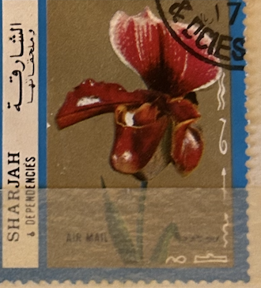
| SOURCE | TITLE| IMAGE MATCH | click to source page |
| Etsy | Antique Slipper Orchid Lithograph - Etsy | 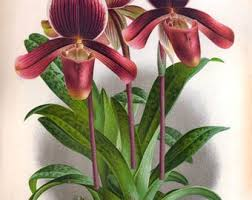 |
| Dreamstime.com | Cuba - Circa 1972:: Postage Stamp Issued in the Cuba with the Image of TheBrasso Cattleya Sindorossiana, Circa 1972 Editorial Image - Image of flower, postage: 391933840 | 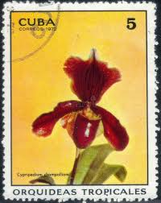 |
| eBay | Madagascar 1570-76, Orchids, stamped | eBay | 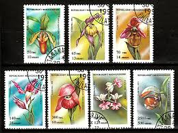 |
| Gunzenhauser Orchideen | Primary Hybrids - Gunzenhauser Orchideen | 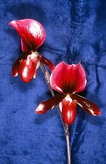 |
| Etsy | Antique Print Orchids - Etsy | 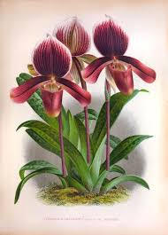 |
| What's her name? : r/orchids | 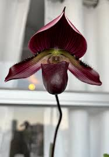 | |
| Find Your Stamps Value | Orchids: Paphiopedilum markianum - 兰花: 虎斑兜兰80f Multicolored stamp price, value | 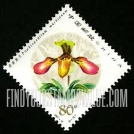 |
| Shutterstock | 11+ Thousand Flowers Cuba Royalty-Free Images, Stock Photos & Pictures | Shutterstock | 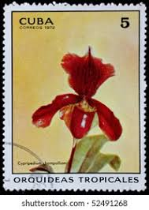 |
| Which is the correct Paphiopedilum bingleyense cross? | 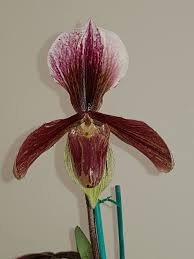 | |
| Phah... finally open. : r/orchids | 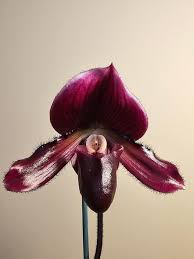 | |
| rarest-finds.com | Lindenia Limited Edition Print: Paphiopedilum, Cypripedium Superbiens, – Rarest Finds | 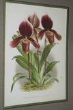 |
| Club Amigos de las Orquídeas | Álbum 02 - Club Amigos de las Orquídeas | 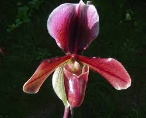 |
| Paph Ruby Charm : r/orchids | 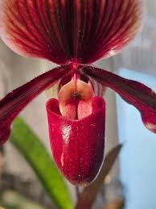 | |
| Paphiopedilum "Black Jack". First time this one has had 3 spikes. | 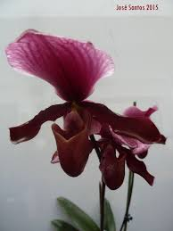 | |
| eBay | Guinea Sc 1375-80 Orchids Paphiopedilum gowenanum, Sea cliffl, Papa rohl, | eBay | 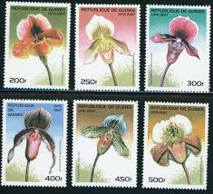 |
| pixels.com | Hung Sheng 'Red Apple' Orchid flower by John Keates | 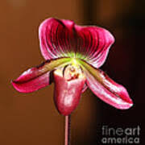 |
| Orchids.org | Orchid Hybrid: Paphiopedilum Hsinying Sceptre | 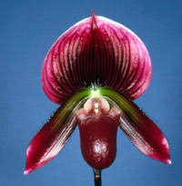 |
| BidCurios | Guinee - Used Stamp - 1997 - Orchids - Flowers theme - (B-004/A2)g - BidCurios | 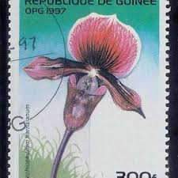 |
| Slipper Orchid Info | Paphiopedilum callosum | 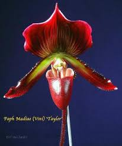 |
| Wikimedia.org | File:A and B Larsen orchids - Paphiopedilum King Arthur 72-18.jpg - Wikimedia Commons | 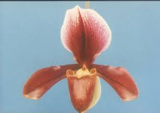 |
| Amazon.com | Thoughts and Ideas: Wilson, Byrne: 9798466512052: Amazon.com: Books | 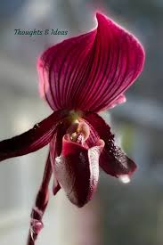 |
| Orchids Limited | Paph. Hsinying Glory 'Big Ventral' x charlesworthii 'Pisgah' HCC/AOS - OrchidWeb | 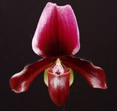 |
| OrchidRoots | Paphiopedilum Cocoa Raccoon - orchidroots | 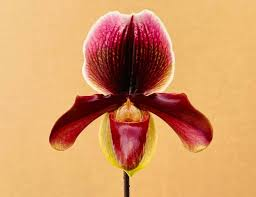 |
| OrchidRoots | Paphiopedilum Cocoa Elegant Rouge - orchidroots | 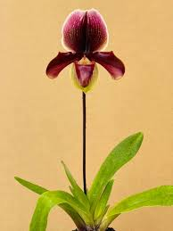 |
| Flickr | Orchid Festival at Kew Gardens | Lucy Standen | Flickr | 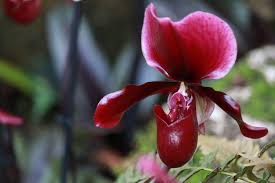 |
| eBay | Guinea Sc 1375-81 Orchids MNH Set + Souvenir sheet Value $ 14.75 | eBay | 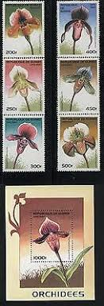 |
| Creazilla | n332_w1150 - Traditional visual art under Public domain license | 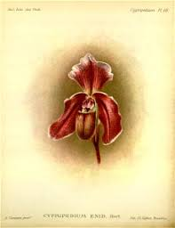 |
| Paphiopedilum Maudiae Vinicolor 'Black Jack'. Two spikes, three flowers. | 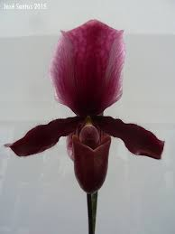 | |
| Dreamstime.com | A Red Flower Cypripedium Calceolus that Looks Like a Dragon or a Bird Stock Photo - Image of botanic, blurred: 157990508 | 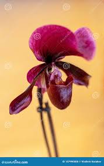 |
| Slippertalk Orchid Forum | Callosum viniferum | Slippertalk Orchid Forum | 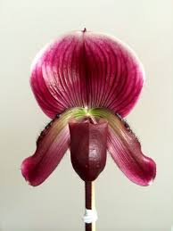 |
| Orchids-R-Us | All Products 4 Sale – Tagged "Paph"– Orchids-R-Us | |
| Dreamstime.com | Harrisianum Orchid Stock Photos - Free & Royalty-Free Stock Photos from Dreamstime | 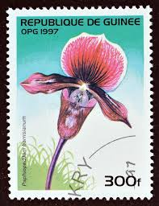 |
| Would very much appreciate ifs anyone knows the names of those two paphiopedilums? | 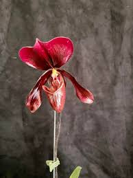 | |
| Paphiopedilum Ruby Charm: This compact hybrid delights with its ease of growth, highly attractive leaf mottling, and spectacularly glossy flowers. Particularly vigorous thanks to a species parent, this orchid is fast-growing compared | 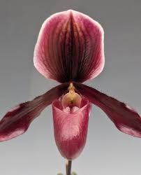 | |
| fredmhaynes.com | Cypripedium Orchids on Stamps | Fred Haynes | 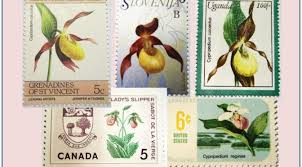 |
| eBay | GUINEA ORCHIDS STAMPS SET 6V + S/S COMPLETE 1997 MNH ORCHID FLOWERS WILDLIFE | eBay | 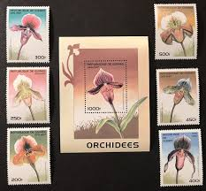 |
| Lady Vanda Orchids | Paphiopedilum – Tagged "Red" – LadyVanda | 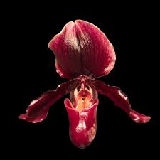 |
| Paphiopedilum maudiae x charlesworthii | 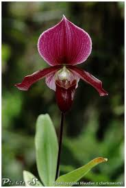 | |
| What is the species of this orchid? | 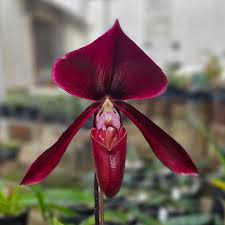 | |
| Lady Slipper Orchids - Year Round | 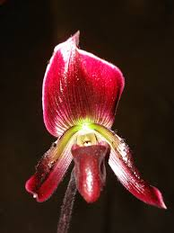 | |
| My beautiful Paph "Black Jack" Love my orchids 🥰 | ||
| Shutterstock | Postage Stamp Stock Photo 15069232 | Shutterstock | 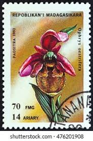 |
| eBay | GUINEA Sc# 1375-81 CPL MNH SET of 6 and SOUVENIR SHEET of ORCHIDS | eBay | 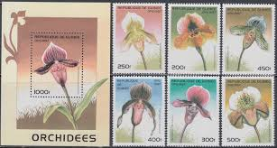 |
| Orchid-Tree | Paphiopedilum Orchids: Premium Orchids And The Reasons Behind Their Po – Orchid-Tree | 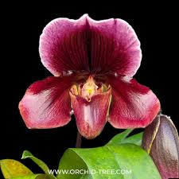 |
| It's no wonder these take so long to develop, just look at those details! : r/orchids | 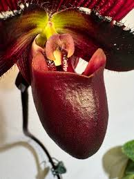 | |
| The Boston Globe | Orchid fever spreads in the suburbs - The Boston Globe | 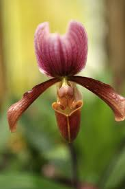 |
| Madisons Black Orchid Cookie Club And many more! 😊 | 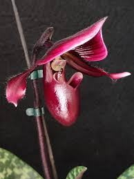 | |
| Central Ohio Orchid Society | Orchid Sales + Show Displays | CentralOhioOrchid | 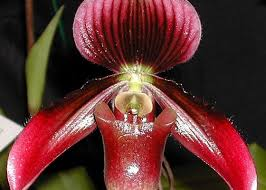 |
| Local Lather Refillery & Soap Shop | Earthy Scent Bottle Fills – Local Lather Refillery & Soap Shop | 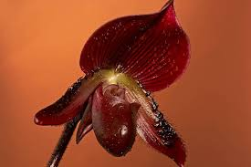 |
| forumsr.com | Erotic Flowers and nature - Page 2 | 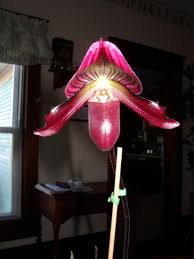 |
| London Tickets | Kew Garden Orchid Festival 2026 | Displays & Visitor Guide | 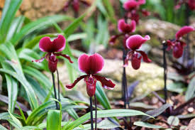 |
| Aerial Photo Lab | Paph Masupi x Paph Hainenense | |
| Majda Božnar | Facebook | ||
| Seattle Orchid | Paphiopedilum fairrieanum x Magic Leopard | |
| Maudiae type slipper orchids in bloom | ||
| What's Next? : r/orchids | ||
| Discover 21 素材照片-动植物and unusual flowers ideas | planting flowers, rare flowers, exotic flowers and more | ||
| Slippertalk Orchid Forum | Paphiopedilum Schaetzchen | Slippertalk Orchid Forum | |
| Dreamstime.com | Cypripedium Champolliom Orchid, Tropical Orchids Serie, Circa 1972 Editorial Image - Image of design, hobby: 102027335 |
{kind=link}